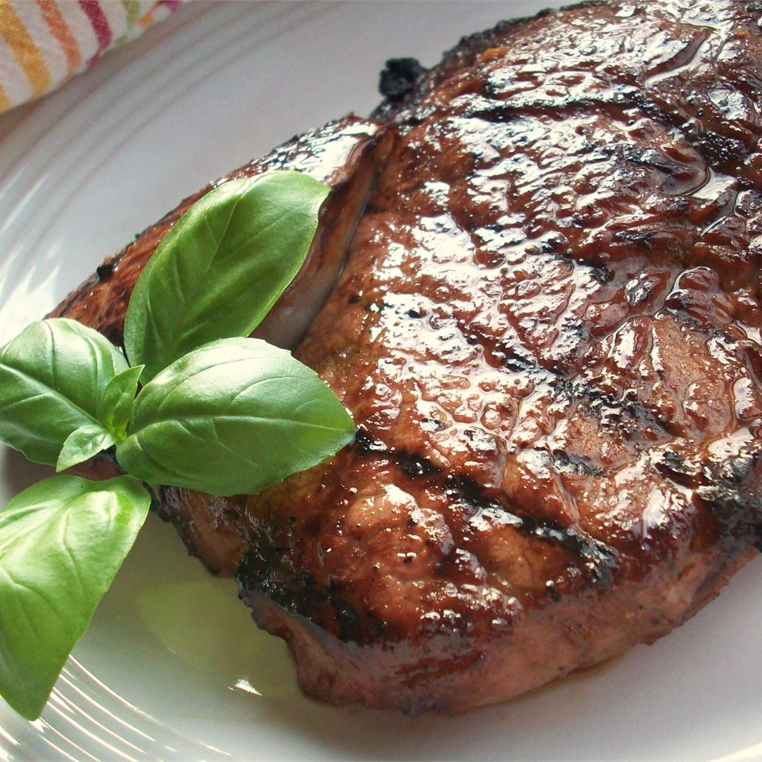

Garlic Steaks

a simple recipe for rib eye steak
This beautiful marinade adds and exquisite flavor to these already tender steaks. the final result will be so tender and juicy, it will melt in your mouth. It only need 15 mins prep and 15 mins cooking with additional 1 day for marinade the steak. this recipe is for 2 servings
Ingredients
- 1/2 cup balsamic vinegar
- 1/4 cup of soy sauce
- 3 tablespoons minced garlic
- 2 tablespoons honey
- 2 tablespoons olive oil
- 2 teaspoons ground black pepper
- 1 teaspoon Worcestershire sauce
- 1 teaspon onion powder
- 1/2 teaspoon salt
- 1/2 teaspoon liquid smoke flavoring
- 1 pinch cayenne pepper
- 2(1/2 pound) rib-eye steaks
Directions
- In a medium bowl, mix the vinegar, soy sauce, garlic, honey, olive oil, ground black pepper, Worcerstershire sauce, onion power, salt, liquid smoke, and cayenne pepper.
- Place steaks in a shallow glass dish with the marinade, and turn to coat. For optimum flavor, rub the liquid into the meat. Cover, and marinate in the refrigerator for 1 to 2 days.
- Preheat grill for medium-high to high heat.
- Lightly oil the grill grate. Grill steak 7 minutes per side, or to desired doneness. Discard leftover marinade.
Back to Menu